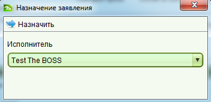

Перед тем как назначить заявление на исполнение, убедитесь что флажок "Оплачено" отмечен на вкладке "Оплата" формы заявления. Если флажок не отмечен, откройте заявление для редактирования, установите флажок и сохраните изменения. Список неназначенных заявлений автоматически обновится и отобразит изменения.
Установите галочки для одного или нескольких заявлений помеченных как оплаченные в списке неназначенных заявлений и нажмите кнопку "Назначить" на панели инструментов, расположенной над списком. В результате этого появится всплывающее окно для выбора исполнителя, которому будет назначено заявление(я). Выберите исполнителя и нажмите кнопку "Назначить". В завершении списки неназначенных и назначенных заявлений будут автоматически обновлены и вы увидите только что назначенное заявление(я) в списке "Назначенные".
Обычно пользователи могут назначать заявления только себе (например когда они готовы обработать новое заявление), тем не менее начальник отдела (или группы) имеет права регулировать нагрузку своих подчиненных и назначать или освобождать от исполнения заявлений других сотрудников.
Смотрите также: